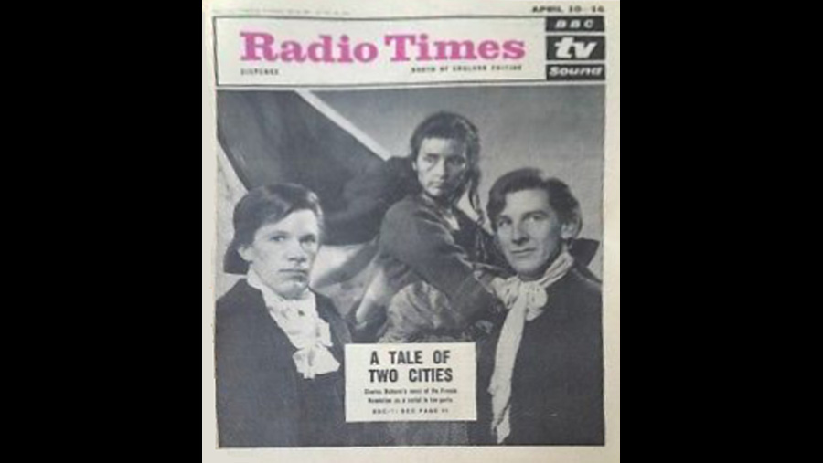

1965

CAST
Sydney Carton
-
John Wood
Charles Darnay
-
Nicholas Pennell
Lucie Manette
-
Kika Markham
Jarvis Lorry
-
Leslie French
Dr. Alexandre Manette
-
Patrick Troughton
Miss Pross
-
Alison Leggatt
Madame Defarge
-
Rosalie Crutchley
Monsieur Defarge
-
George Selway
'The Vengeance'
-
Diana King
C J Stryver
-
Jack May
Jeremiah 'Jerry' Cruncher
-
Ronnie Barker
John Barsad
-
Peter Bayliss
Road Mender
-
Ralph Nossek
Gabelle
-
Rolf Lefebvre
First Man
-
Hubert Hill
Second Man
-
Frank Littlewood
Jacques One
-
Stephen Dartnell
Jacques Two
-
Artro Morris
Jacques Three
-
George Little
Public Prosecutor
-
Frederick Hall
Marquis St-Evrémonde
-
Jerome Willis
Mrs. Cruncher
-
Janet Henfrey
Young Jerry Cruncher
-
Darryl Read
Seamstress
-
Fiona Duncan
Attorney General
-
John Hussey
Gaspard
-
Wilfred Grove
Jenner
-
Christopher Hodge
President of Tribunal
-
Bernard Kay
Wine Seller
-
Marguerite Young
Madame Manette
-
Penelope Bartley
Jean
-
Bette Bourne
Roger Cly
-
Nicholas Smith
First Patriot
-
Michael Bilton
Solicitor General
-
John Bryans
Marquise St. Evrémonde
-
Sonia Graham
Ancient Clerk
-
Eric Francis
Governor de Launay
-
Duncan Lewis
Major de Losme
-
Michael Martin
Singer
-
Rita McKerrow
Marie
-
Pauline Munro
Judge
-
Lionel Hamilton
Clerk of Court
-
Maurice Quick
CREATIVE TEAM
Director
-
Joan Craft
Screenplay
-
Constance Cox